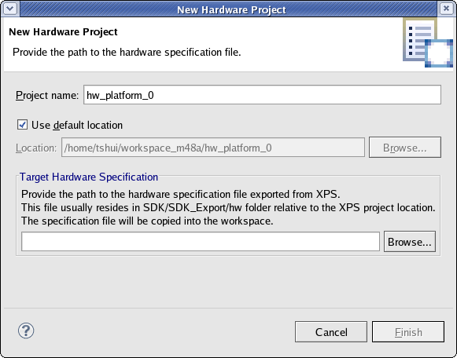

Embedded hardware components
Hardware platform specification
SDK requires that you specify a hardware platform specification file before you can start developing C/C++ application projects.
When launched from XPS, SDK specifies the hardware platform specification file as an argument and you can skip this step.
When using SDK for the first time with a given workspace, select File > New > Xilinx Hardware Platform Specification to open the New Hardware Project dialog box. In this dialog box, you can specify the location of the hardware platform specification file. When creating a new Xilinx C or C++ application project, the New Hardware Project dialog box opens automatically if the workspace does not contain a Hardware Platform Specification file.

You can view the design report of the hardware system created by the Xilinx Platform Studio tool and exported to SDK. To open the hardware platform specification viewer, double-click on the XML file under the hardware platform project in the Project Explorer. In the hardware platform specification overview, click on the link to the HTML design report to open it in a browser and display the following information about the hardware design:

Embedded hardware components
Hardware platform specification
Copyright © 1995-2012 Xilinx, Inc. All rights reserved.